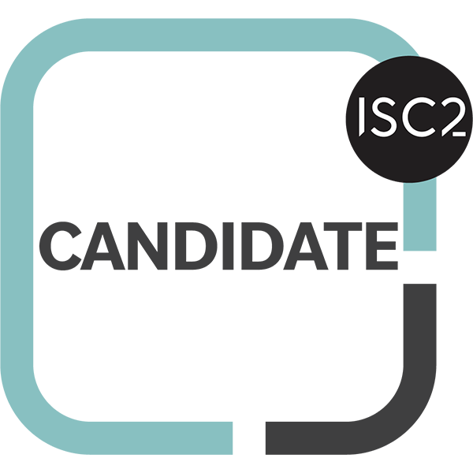
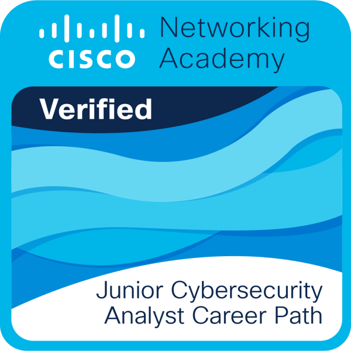
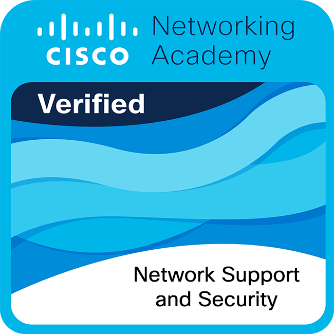

Computer Science undergraduate at Lagos State University (LASU) & Millennium Fellow (Class of 2026) convened by MCN & UNAI. Hands-on expertise in Wazuh SIEM, Sysmon telemetry, automated active defense, and NIST CSF & ISO 27001 risk evaluation.
I am a dedicated Computer Science student bridging the gap between theoretical computing and the real-world operational velocity of an enterprise Security Operations Center (SOC).
Honored to be selected as a Millennium Fellow (Class of 2026) by the Millennium Campus Network (MCN) and the United Nations Academic Impact (UNAI), I lead collegiate initiatives tackling technology access and digital governance principles.
My defensive security background includes investigating live simulated network breaches as a Cyber Core Associate Intern at Ubuntu Bridge Initiative (UBI) Cohort 01, mapping risks to NIST CSF & ISO 27001, and supporting enterprise IT infrastructure as a SIWES Intern at LASUED.
Millennium Fellow (Class of 2026) • MCN & UNAI
Cyber Core Associate (UBI) & SIWES Intern (LASUED)
B.Sc. Computer Science • Lagos State University (LASU)
Wazuh SIEM, Sysmon Telemetry & Threat Containment
Engineered custom Sysmon telemetry pipelines capturing high-severity zero-trust evasion threats. Detected Level 15 unauthorized executable drops and autonomous Level 12 UAC Bypasses (FodHelper.exe).
Full-scale SOC environment deployed on Ubuntu Server. Integrated Microsoft Sysmon to detect surrogate injections (dllhost.exe). Configured Active Response neutralizing SMB brute-force attacks (MITRE T1110) via automated firewall blocks in < 60 seconds.
Public Cybersecurity Resource Hub & Interactive Bank Scam Simulator built for the GCAP Cohort 1 Capstone Project. Educates users on financial fraud vectors, phishing tactics, and everyday cyber hygiene.
Architected a normalized relational MySQL database for the LASUED SIWES unit to transition manual paper tracking to a digital, real-time tracking workflow, cutting retrieval times by 70%.
Practical laboratory notes and packet inspection documentation mapping the OSI model and TCP/IP stack directly to SIEM alert triage and transport-layer boundary controls.

Global Accreditation • Issued May 2026
8-Course Specialization • Credly Verified

Cisco Networking Academy • April 2026

Cisco Networking Academy • Feb 2026
Currently seeking SOC Analyst, Blue Team internship, or Detection Engineering opportunities. Let's discuss how I can contribute to your security operations.